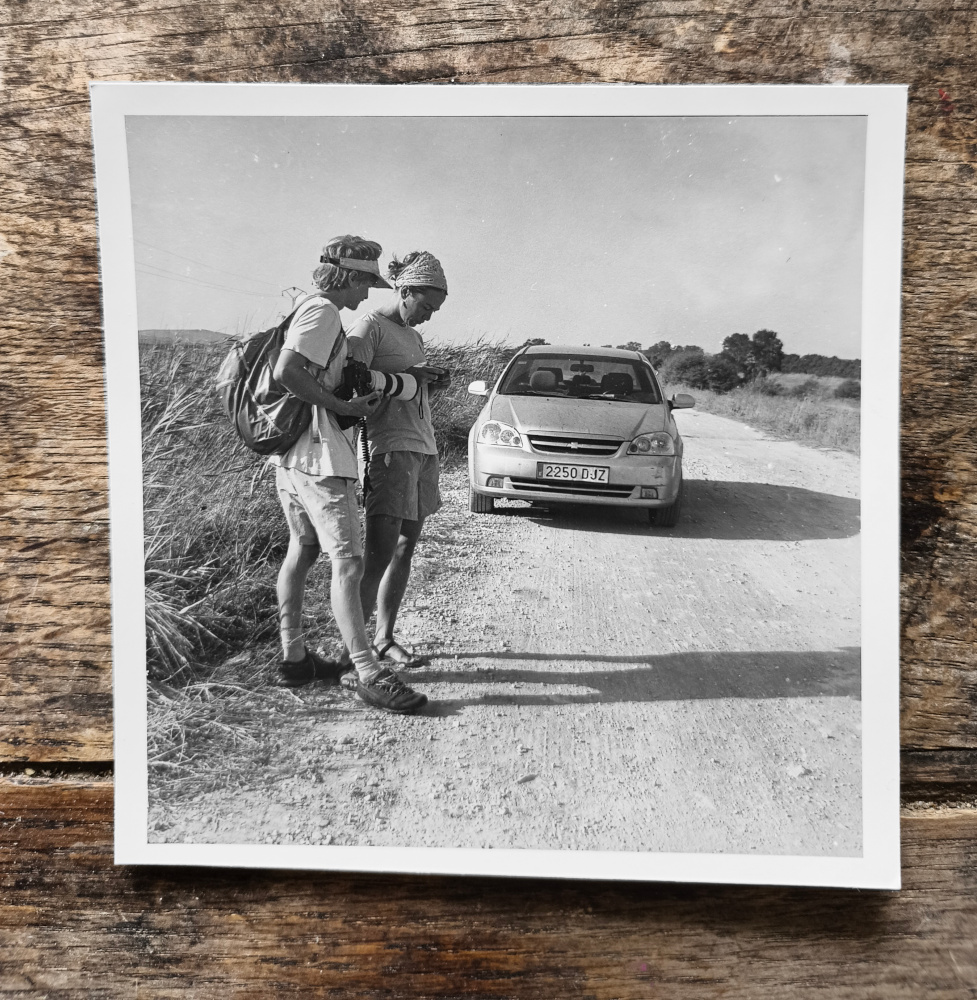

1. Sleep
He used to call him Matsli'ah, not a common name, it was his family name and a rather strange one to be honest, in hebrew it means succesful. Never have I met another Matsli'ah before or after this one. In later years he called him by his first name: Itsik.
I only ever saw him in a short period when I was around five or six, in the late seventies, like all my dad’s friends he had a large uncombed mane and largeness in general. Being that young, most people seem large. His flat felt untidy and well lived in. The seventies specialised in cosiness, and that place, the moustached crowd, the coffee, and constant smoke were perfectly that.
Matsli’ah had a fancy golden globe on his clattered low living-room table, it would open on hinges and was full of John Player Special cigarettes. Did I knock it down and saw him rearrange them in the globe? I can’t be sure. I just remember what a great fascination that globe was for me.
I remember hearing one day, that Matsli’ah fell asleep in his car and crashed it. The possibility never occured to me before. I imagined him crashing into a tree. I don’t know if I saw him bandaged or if it was also just my imagination. Even though that crash didn’t kill Matsli’ah, in my mind all those years his name was of someone that dubbed with death.
More than forty years later my dad told me that Matsli’ah died, yet I am left with no memory of the final cause, no doubt its glory will forever compete with the picture of the car and the tree.
Meanwhile every mention of sleeping at the wheel brought me back to this original picture that was formed in my six years old brain. I wonder whether in the first time that I felt drowsy while driving, not having that warning picture, I could have nodded off and out of this world.
2. Lark
My dad had a fascination with old American cars, heavy and long and styled. I remember a couple of those. He held on to them through breakages, custom solutions where replacement parts couldn't be attained, and finally drove them to the ground. I don't remember the first car he owned in my lifetime, but as it kept being mentioned, it formed a mythical psuedo memory, like the batmobile. It was a 1960s Studebaker Lark, painted black. It had a former life as a taxi, and the only semi real memory I have is of great spaciousness on the back seat, no seatbelts ( it was the 1970s ), and me and my brother sliding from side to side on the smooth black leather.
The story that I was repeatedly told about the car crowns my memory with a twist, it was our job to hold on to the doors on the turns as they’d fling open if not held.
Those cars with the semi automatic gear stick at the wheel and a parking break at the feet allowed for three people to sit at the front and broke the barrier between the front seat occupants, drivers or not. When I sat in the front with him, it was my job to press the horn, it was my job to hold the steering wheel while he rummaged for cigarettes in his leather briefcase.
3. Benny
Benny had a tow truck. it was either a ford or a dodge, fading blue and ancient. We lived in a block of flats on a disapearing sand dune. the patch to the back of our block was the last patch of dune around. It had a fair bit of building rubble, steel rebar, and general rubbish mixed into the sand, and vegetation was reclaiming whatever part it could over time.
Benny’s tow truck was one of the regulars to park on that patch, It would rest there from the late afternoon till the early morning, when without fail Benny will attempt to start the motor for a good few minutes. It always took him a long while, and for the near radius of blocks it was a pretty reliable wakeup call. When Benny finally got the engine running he would not let it die till he finished work, and even when he came home for lunch, that engine kept running.
I didn’t get to see the tow truck that took Benny’s tow truck away. For years before the image was alive in my head and like so many other childhood memories, whether I saw it or imagined it makes little difference. Our childhoods are made of possibilities and approximations, and like it or not, that is more than good enough.
4. Quirks
I never owned a car that didn't have a quirk. I find it as impossible as having no dents in the bodywork, let alone scratches. Currently it's a Chevrolet. It was actually manufactured in South Korea, so it has little to do with those twentieth century Chevies but the slanted cross logo in the front.
The aircondition generally works, which in the summer months I value more than the car’s mobility, alas the quirk is that the air sometimes is randomly blocked from the front outlets, and although the fans might be loudly churning, and the temperature of what air comes out is right, there is no power to drive that cold air anywhere near the passengers’ faces. The blockage just happens randomly mid-drive. It has a hundred percent chance of happenning on long journeys on the hottest days. No matter the frustration, there is no solution but to wait for the mysterious hand that placed it to lift, and it lifts only once you despair, give up on trying to play with the settings, and truly abandon any hope.
I wonder whether my expectations from a car has been conditioned by my childhood. I can recount the cars my dad owned, I subscribe utterly and completely to the idea of purchasing second hand cars, the cheap un popular ones with the lowest milage, the once-posh ones with the refurbished engines. All of his cars he drove to the ground. I remember going through the technical historical documents in the glove compartment of each, his little insightful demos of automatic hydraulic rising on start, kickdown automatic gears on a hill, 4 wheels drive out of a sandy beach, all aluminium engines, electronic petrol injection. Each car came equiped with the feature that the marketing department was boasting about and with the quirk the previous owner was trying to play down, and each and every one of them ended up towed away to the scrap yard.
